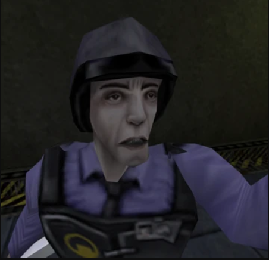
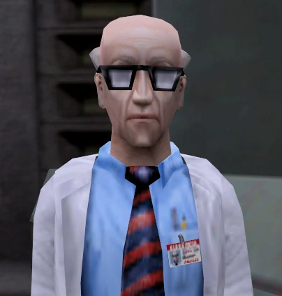
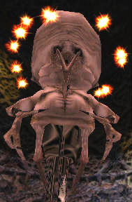
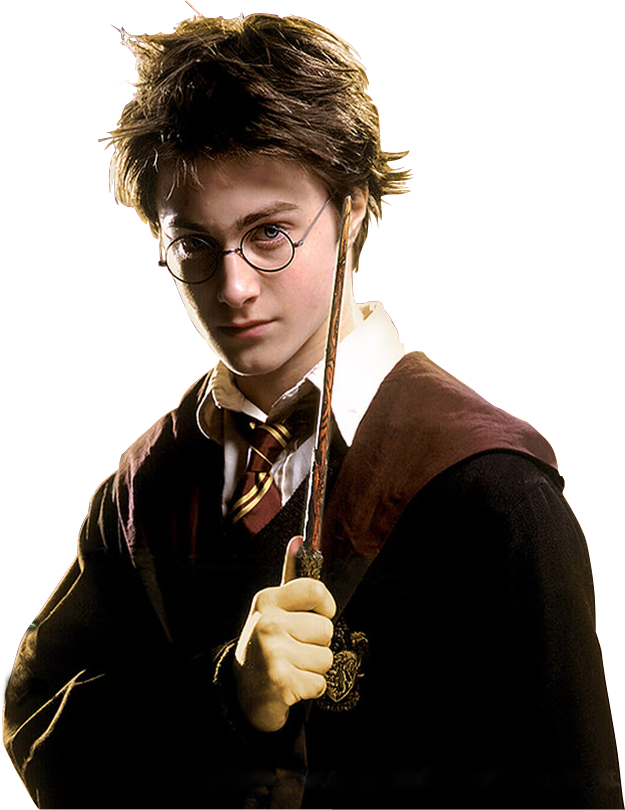

G-Man’in kimliği ve amacı gizemini korur. Half-Life serisinde, Gordon Freeman'ın Black Mesa'daki olaylar sırasında tanık olduğu yaratıklarla savaşmasının ardından ona müdahale eder.Half-Life 2’de ise, Gordon'a bir görev vererek onu Combine'a karşı savaşa yönlendirir. G-Man, çoğunlukla gizli bir ajandır ve Freeman’ı kullanarak kendi çıkarlarını gözetmektedir.
Gordon Freeman, Half-Life serisinin başkahramanıdır ve oyuncuların oyun boyunca kontrol ettiği karakterdir.Kendisi, Black Mesa Araştırma Tesisi'nde çalışan bir teorik fizikçidir ve serinin temel olaylarının merkezinde yer alır.
Barney Calhoun, Half-Life evreninde önemli bir yan karakterdir ve genellikle Black Mesa araştırma tesisindeki güvenlik görevlisi olarak tanınır. Oyunlarda Freeman'a yardımcı olur ve birçok önemli olaya tanıklık eder.
Isaac Kleiner, Half-Life serisinin en önemli karakterlerinden biridir ve Half-Life 2'de öne çıkar.Kendisi, Black Mesa Araştırma Tesisi'nde çalışan bir bilim insanıdır ve aynı zamanda Gordon Freeman’ın eski bir arkadaşı ve güvenilir müttefikidir.
Nihilanth, Half-Life oyunundaki final boss'tur ve Xen gezegeninde yaşayan güçlü bir yaratık olarak karşımıza çıkar. Telepatik yeteneklere sahip olan Nihilanth, oyunun başından itibaren Gordon Freeman’a zorluklar yaratır. Xen'deki diğer yaratıkların lideri olan Nihilanth, insan dünyasına geçiş yapmayı amaçlar, ancak sonunda Freeman tarafından öldürülür.
harry potter